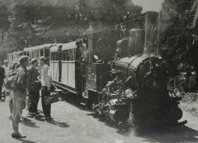

A vasútvonalat 1893-ban gróf Franken-Siersttorpff Henrik porosz születésű földbirtokos építette, hogy Királyréten lévő 4000 hektáros erdőbirtokából, hogy egyszerűbben, gyorsabban és persze olcsóbban eltudja szállítani a faanyagot. A vonal 600 mm-es nyomközzel épült meg Kismaros- Szokolya- Királyrét- Adolf kút vonalon. Ezekben az időkben Kismaroson volt a fűtőház és Adolf kúton a rakodó. A vasúton eleinte csak a Mária nevű gőzmozdony szállította a rakományt, amit fával fűtöttek, mivel a fartermelésből arra is futotta.
1912-ben elkezdődött az első fejlesztés a vasút történetében. A vonalat kibővítették a Királyrét- Bajdázó szárnyvonallal, ahonnan nem fát, hanem követ szállítottak. A bányászat kezdetével elkészült Kismarosról a Dunaparti Rakodó és Nógrádverőcei (ma Verőcei rakodó, de már nincs rajta forgalom) szárnyvonal. A fejlesztés során felújították a régebbi vonalakat így elnyerve a maira hasonlító nyomvonalat, ami így már elérte a 30 kilométert. A Pap-hegy lábánál fekvő Paphegy állomáson építették fel az új járműjavítót és a helyi gazdaság új központját is. A felújítás alatt további hat gőzmozdony érkezett a vasúthoz és immár körülbelül háromszáz ember dolgozott a vasúton, illetve az erdészeten.
A felújítást követtő években (1912-1916) hatalmas forgalma lett a vasúton. Naponta akár hatvan-hetven teherkocsit is elszállítottak a dunaparti, illetve a Nógrádverőcei MÁV átrakóhoz. Ezekben az időkben több alkalommal is tulajdonost váltott a gazdaság és vele a vasút is. 1916-ban Balog Brunó, majd Czeczoviczka Emil cseh földbirtokos lett a gazdaság tulajdonosa. 1924-ben Hoffer Kúnó svájci polgár tulajdonát képezte a vasút és a gazdaság. 1926-ban az eddig használt Jánospusztai Uradalom és Ipartelepek Rt. nevet lecserélte a Királyréti Uradalom és Ipartelepek Rt.-re.
1927-ben megépült a Cseresznyefa rakodótól az Inóczi bányába vezető siklópálya. Ezt a pályát úgy kell elképzelni, hogy a domborzati viszonyokat kihasználva egy olyan pályát építenek ahol felfelé egy ló vagy esetleg egy mozdony húzza fel az üres kocsikat, majd lefelé egy fékező ember segítségével viszik le a rakományt így spórolva a költségekkel.
1930-ban a Kisinóci kőbánya és Paphegy között üzembe helyeztek egy drótkötélpályát, aminek a segítségével el tudták szállítani a köveket a kőbányából a Paphegyi kőzúzdáig, ahol átkerültek a kisvasúti kocsikba.
Sajnos mivel a bányák kimerültek ezért 1941-ben leállították a bányászatot és a kocsik, mozdonyok nagy részét elszállították, csak két mozdony (Muki, Triglav) maradt meg. Miután a kőbányákat bezárták már csak fát szállítottak a vasúton, de abból is évi öt-hatezer köbmétert. Ezek után már volt személyszállítás is, de nem menetrend szerint, hanem csak a Királyréten élő családokat vitték le Szokolyára, a nyolc személyes Treznia pályakocsival.
1945-ben az államosítás következtében az erőgazdaság és a vasút is a Balassagyarmati Állami Erdőigazgatóság tulajdonába került. A következő években több átszervezés után az Ipolyvidéki Erdő és Fafeldolgozó Gazdaság (IEFAG) lett a vasút kezelője, ami később Ipoly Erdő Rt., napjainkban Ipoly Erdő Zrt. néven fut.
Két évvel később (1947) elkészült a Királyrét- Egyházbükk szárnyvonal, mely a Hárs-patak felső végéig vezetett. Az átadás utáni években innen közel 20000 köbméter fát szállítottak el a Nógrádverőcei MÁV rakodóhoz.
Hivatalosan 1954. május 26.-án indult meg a menetrend szerinti személyszállítás Kismaros- Királyrét között, de hétvégén a kirándulok kedvéért a vonatok elmentek egészen a Cseresznyefa állomásig. kezdetekben MD-40-es mozdonyokkal és gőzmozdonyokkal vontatták a kocsikat. Eleinte házi gyártású, nyitott, tető nélküli kocsikkal közlekedtek, de a későbbiekben ezeket ellátták tetővel és függönyökkel az esetleges nyári záporok miatt. Mivel a nyári üzemre meg volt oldva személykocsi állomány ezért a téli időszakra három zárt és fűthető kocsit rendeltek a Fővárosi Villamos Vasút-tól (FVV), ami kifejezetten keskenynyomközre épült..
1962-ben megjelentek az első C50-es mozdonyok, melyekből összesen négy darab érkezett. Dízelesítés következtében leáldozott a gőzmozdonyok korszaka a vasúton, de a Triglav megmarat a külön menetek részére. Sajnos 1973-ban eljött az ő ideje is, leselejtezték, de nem vágták szét, hanem a nagycenki kisvasútra került ahol kiállították a helyi skanzenben. 2007-ben egy járműcsere útján ahol a Kismaroson kiállított csingervölgyi mozdonyért cserében a Triglavot visszahozták a vasúthoz és kiállították az állomásépület mellett ahol ma is megtalálható. Ugyanebben az évben elkezdődött a személyforgalom fejlesztése is az úgynevezett "dunakeszi kocsik" beszerzésével. A kocsikból mindössze tíz darab készült a MÁV Dunakeszi járműjavítójában..
A hetvenes évek közepére a vasút által érintet erdőségek jó részét kitermelték tehát nem volt anyag, amit elszállítsanak, ezért csökkent a tehervonatok száma. Ez idő alatt már érezhető volt az 1968-as közlekedési koncepció. A turistaforgalom és a munkába járók miatt nem lett volna jó döntés a vasút megszüntetése, ezért elkezdték keresni a megfelelő megoldást, hogy megmentsék a vonalat. Sok gondolkodás után arra a döntésre jutottak, hogy a vasutat a Budapestihez hasonlóan úttörővasúttá kell átalakítani. Végül 1975 őszén több ezer önkéntes dolgozott az átalakításon. Az addigi zöld mozdonyokat és zöld-fehér színű kocsikat leváltották a piros színű mozdonyok és a piros-fehér kocsik. Ez idő alatt Nógrádverőcét és Kismarost közigazgatásilag összevonták, így tehát a vasút végállomásának nevét is meg kellett változtatni. Az átszervezés során több állomást és megállót átneveztek az úttörőnézet miatt.

A villamosenergia hasznosítása2012 telén kezdték el és 2013 májusban indult el első útjára az új fejlesztésű villanyvonat, Vili. A jármű a zöld energia új hírnöke ként kezdte meg pályafutását, ugyanis színtiszta elektromos árammal üzemel. Az ülések alatt 12 darab akkumulátor található, amelyek hálózatról tölthetőek. Emellett kis százalékban rásegíthetnek a töltésre a jármű tetején lévő napelemek, illetve a villanyfékezésből termelt energia. A szerelvény 30 fő befogadására alkalmas, de csak jó idő esetén. Ez nem a napelemekre, hanem a jármű nyitottságára fogható, mivel nyári kivitelben készült és oldalról csak a biztonsági korlátok alkotják a védelmet
A Királyréti Erdei Vasút jelenlegi járműparkja További információ a https://www.kiralyreti-erdei-vasut.hu/jarmuveink/ oldalon találhatók.